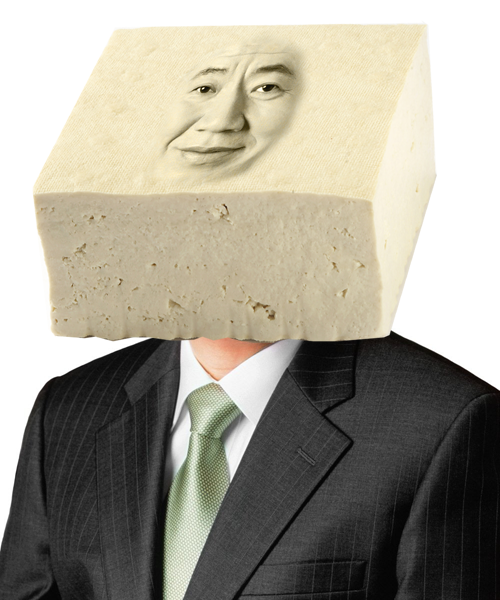

두부(일본어: Tofu, 중국어: 豆腐)는 두유에 간수(소금물) 등을 넣어 굳혀서 각지게 만든 가공식품이다. 두유에서 두부를 만드는 것은 우유에서 치즈를 얻어 내는 것과 비슷한 기술이다. 아시아 음식이나 채식 음식에서, 튀긴 형태의 밀고기 (밀가루의 글루텐으로 고기처럼 만든 음식)가 종종 두부로 오해되기도 한다. 순두부나 연두부는 두부를 만드는 과정을 약간 달리한 것이다. 비지는 두부 생산과정의 부산물이다.
